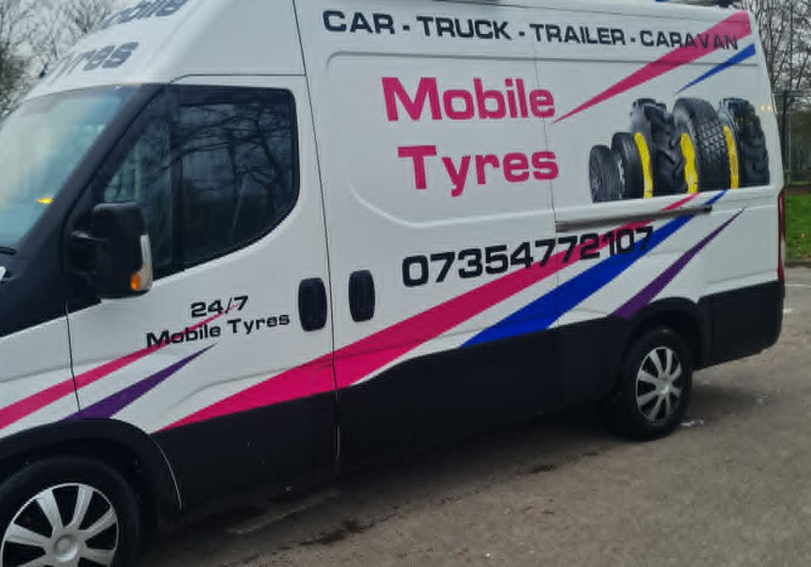
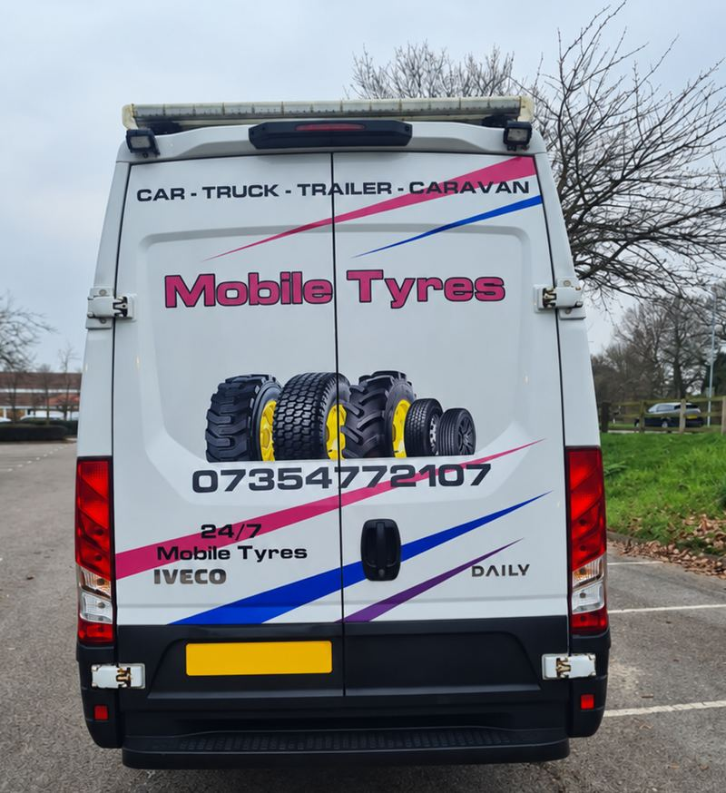

Mobile tyre fitting in Hull & surrounding areas
Tyre trouble at home, at work or on the road? Call Craig at Turbo Tyres Hull with your location and tyre details to check availability and get a quote for a mobile visit.
Open 24 hours, 7 days a week. Call to confirm availability, price and timing.

We come to your vehicle
Turbo Tyres Hull provides mobile tyre services in Hull and surrounding areas, including enquiries for Driffield, Scarborough and Beverley. Speak to us about new tyres, puncture repair, wheel balancing and locking wheel nut removal.
- New tyres
- Puncture repair, where the tyre can safely be repaired
- Locking wheel nut removal
- Wheel balancing
Not sure which service you need? Call and describe the problem or send a photo of the tyre on WhatsApp.

Finding your vehicle
Tell us your exact location rather than just the nearest town. We will check coverage, access and tyre availability for your vehicle and confirm the price and expected timing before you agree to a visit.
Arrange your tyre fitting
- Tell us where you areGive your postcode, address or location, and explain what has happened to the tyre.
- Check your tyre optionsHave your vehicle registration and tyre size ready if you can read it safely. Tell us if you need help with a locking wheel nut.
- Confirm before we comeWe will discuss availability, access, the price and expected timing so you can decide whether to arrange a visit.
Which areas can I request a mobile visit in?
Call us for Hull, Driffield, Scarborough, Beverley and surrounding-area enquiries. Coverage and availability depend on your exact location and the work needed; please confirm these by phone before arranging a visit.
How much will it cost?
The price depends on the tyre, work required and your location. Call for a quote before agreeing to a visit.
Cannot find the tyre size?
Call with your vehicle registration and explain the problem. Only check the tyre or take a photo if it is safe to do so.
What customers say
Craig came out to my daughters flat tyre straight away. Nail in it. Fair price for a great job. Craig was professional, helpful and gave my daughter advice for the future…
What a guy. Turned up on a Sunday for me miles away from Hull. Fantastic service.
Brilliant service, went above and beyond to get my tyre sorted for me! Great value for money! Would highly recommend to anyone!
5* service! Couldn't have asked for a better service. My tyre was badly damaged on something today. I was gutted I was about to cancel my easter plans for the weekend. Until I found these guys came out within 30 mins amazing price!! Would use again!
Lads are smashing. Had an issue with one of the bolts but the chap advised us with great help. Brilliant price… and come out in 10mins at 11pm. Customer service was outstanding and did the job quickly and professionally.